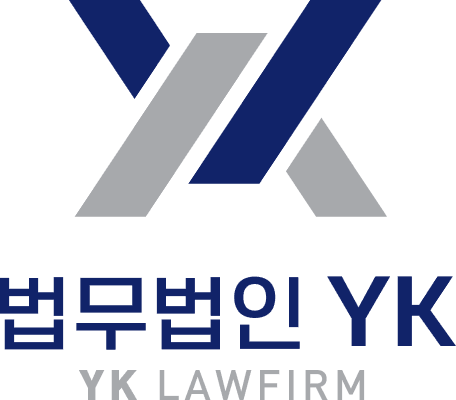

오늘의 YK보다,
앞설 수 있는건
내일의 YK입니다.
-
고객 중심
고객이 없다면 우리도 존재할 수 없습니다.
고객의 신뢰를 얻고 신뢰에 보답하는 것이
YK의 첫번째 원칙입니다. -
혁신
오늘의 YK보다 앞서가는 것은
내일의 YK 밖에 없어야 합니다.
고정관념에 도전하고 지속적으로
성장해야 합니다. -
열정
우리는 한 사람의 인생을 바꿀 수도 있는
중대한 사안을 다루는 사람들입니다.
그래서 내 일처럼
열정을 다 하지 않는 사람은
YK의 일원이 될 수 없습니다. -
겸손
우리의 작은 실수가 누군가에겐 치명적일 수 있습니다.
그래서 매일 같이 하는 일도 겸손한 태도로
신중을 기해야 합니다.
CI 소개
법무법인YK의 워터마크는 어떤기교도 없는
서체를 사용, 올곧은 이미지를 강조함으로써
언제나 정의와 신뢰를 가진 법률가가 되고자 하는
의지를 담고 있습니다.
당당하고 적극적인 분위기의 Navy Color와
겸손과 지성을 상징하는 Gray Color는
젊음과 패기, 도전정신, 전문성을 상징합니다.
로고타입

색상규정
-
YK NAVY2
- HEX
- #132254
- RGB
- 19/34/84
- CMYK
- 100/99/53/20
-
YK GRAY
- HEX
- #888888
- RGB
- 136/136/136
- CMYK
- 53/44/42/0
-
YK NAVY
- HEX
- #0F244A
- RGB
- 15/36/74
- CMYK
- 100/96/56/29
-
YK BLACK
- HEX
- #231917
- RGB
- 35/25/23
- CMYK
- 79/81/82/66